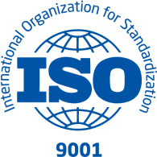

About Us
Processa Consulting is an IT consultancy service provider established and located in Ajman – UAE.
We are specialized in providing IT consultancy services to Private and Public sector in areas
including IT Service Management, Information Security and Quality Management domains.
Consultants at Processa work along with client’s right from inception to understand their
requirement and implement solutions keeping the impact in mind, that aligns with organization goals,
vision and expectations.
We ensure that client requirements are clearly understood and objectives are achieved by utilizing
our acquired skills, expertise and Project management methodology while ensuring quality
Our services include Current state assessments, Compliance reviews, Process definitions and
documentations, Implementations, Internal Audits, Trainings and External audit certification
support.
Our clientele has been mainly in the Banking, Insurance and Government sectors. We are credited with
successfully executing and delivering end to end projects in line with initiatives and requirements
within the mentioned sectors. Currently our clients are located within the MENA region however we
are
working towards expanding to other regions as well.
We are equipped with highly skilled consultants carrying years of experience across GCC, USA and
India

SERVICES
“Synergy of people, technology and process are mandatory for delivering successful and consistent
outcomes.
Process, being the core component of organization culture, has to drive the synergy”.
Our capability offerings include:
- IT Service management – ITIL4, ITIL V3 and ISO 20000-1:2019 based assessments, implementation and
certification;
- Information Security– ISO 27001:2013, NESA - UAE, Dubai Government ISR, ADSIC, based assessments and
implementation;
- Data Protection and Privacy requirements including GDPR and PCI compliance;
- Cloud Security Assessments and standards implementation based on ISO 27017, Cloud Security Alliance CSA
STAR, SOC;
- Vendor/Third Party Assessments;
- IT Process Optimization and Continuous improvements;
- Quality Management – ISO 9001:2015 implementation and certification Support;
and
- Awareness and Training – ITIL4, ISO 20000, ISO 27001, ISO 9001, Project Management, IT Governance based
on COBIT framework.
Our Methodology and Focus:
Our Service delivery model is specifically designed to benefit customers in an efficient way, helping
customer to focus on long term goals while ensuring a return on investment (ROI).
- On premise implementation with end-to-end responsibility
- Dedicated remote mode of operation and support with end-to-end responsibility
- Lead the customer implementation team providing all required assistance for the process implementation
- Deliver services through our / customer selected partners
Measuring Performance and efficiency to analyze ROI (Return on investment) is a key area that Processa
consultancy focus on and provide expert guidance. Processa Consultants engage with clients to identify
potential areas of cost reduction, cost avoidance and revenue enhancement
Our focus is tailored made and based on a Value driven implementation approach by
- Identifying clearly defined objectives
- Process definition with stakeholder involvement through world cafe model workshops and Role specific
documentation
- Modular implementation model following agile methodology
- Balanced Scorecard based strategy implementation and monitoring
- Guidance on Tools and technology integration
- Awareness training to all staffs associated with
NOTE: Standards and definitions are owned and/or copyrighted as follows:
ITIL – Axelos, UK
ISO – International Organization for Standardization (ISO)
COBIT – Information Systems Audit and Control Association (ISACA)
SOC – Association of International Certified Professional Accountants (AICPA)
ISO 20000 Assessment and Implementation
ISO 20000 is a service management system (SMS) standard that specifies requirements for the service
provider
to plan, establish, implement, operate, monitor, review, maintain and improve a SMS. The
requirements
include the design, transition, delivery and improvement of services to fulfil agreed service
requirements.
Implementing ISO 20000-1:2019 helps the IT department to deliver more quality and consistent IT
services
with continuous improvement both to those within the organization and to its customers leading to
improve
customer satisfaction.
Processa Consultancy Services offer Implementation of ISO 20000-1 in phases including
- Performing a Gap Assessment with Report to understand the current maturity against the ISO
standard
- Identify capabilities of Service Desk
- Develop templates and Documenting all the Policy and Procedures as per the standard Requirement
- Support Implementation of the documented Policies and Procedures
- Perform Internal Audits to check the compliance to the Requirement and suggesting Corrective
Actions
- Coordinate with certification body to schedule for External Audit and Certification and with
- support for surveillance audits.
- Participate in external audit and support gaps mitigation
Information Security
With the constant rise in information Security threats and breaches, securing of Information and
information
assets in any organizations has become of paramount importance irrespective of the industry they
belong to.
Any breach in the information security could mean financial losses, system downtime and reputational
impact
Our information security consulting services helps organizations to meet the local and global
compliance
requirements. Our experienced consultants focus on building practices and capabilities to
institutionalize
information security across the organization.
CYBERSECURITY ASSESSMENT
We conduct cyber Security assessments based on ISO/IEC 27001:2013, NESA, DGISR and SOC Cyber Security
Standards.
Activities include
- Review and analyse the Information security policies, procedures and guidelines
- Validate the protection of key information data
- Analyze the organization's network and security for compliance
- Verify configurations and settings for key network components
- Assess the audit items and mitigation levels
- Perform Vulnerability and Penetration tests to understand IT security from an attacker's viewpoint
Consultants will guide the client on corrective actions to be mitigated for non-compliance in each area
as
observed during the assessment. Our consultants will also propose a road map for the mitigation of gaps
with
the objective of continual improvement based on industry best practices.
ISO/IEC 27001:2013 (Information Security Management) Assessment and Implementation
ISO 27001:2013 is envisioned as a standard to improve information security management system of an
organization. Information Security Management System (ISMS) is a systematic approach to manage
sensitive
information of an organization, while ensuring the confidentiality, availability and integrity of
information. All components - People, Processes and Technology – are included in the scope. Risks
against
each of these components are assessed by an effective Information Risk management process, which in
turn
is
aligned with organization level business risks.
Benefits of Implementing ISO 27001:2013
- Boosts your organization image
- Architecture to protect confidentiality, integrity and availability of information
- Define the dependability of Information and Information systems
- Reducing the likelihood of information misuse.
- Compliance with legal, statutory, regulatory and contractual requirements
- Risk Assessment to assess vulnerability of weaker links
- Study impacts of information security risks systematically
NESA COMPLIANCE
National Electronic Security Authority (NESA) UAE Information Assurance standards is the security
controls
introduced by the Government of UAE to ensure the safety and security of information and related
technologies in UAE.
Our experienced consultants can help your organization to define, implement and maintain NESA Compliance
controls.
Our consultants help organizations to implement NESA regulations by conducting pre-implementation
assessments, defining policies, authoring procedures, developing awareness, monitoring performance and
by
conducting assessments following the schedule.
DGISR Information Security Implementation and Assessment
Dubai Government Information Security Regulations (DGISR) is a set of information security regulations
introduced by Government of Dubai in the year 2012.
The regulation is envisioned to reduce risk exposure, ensure more compliance and help in protecting
Dubai
Government data while supporting government initiatives of e-Transformation, Proliferation of Technology
and
people’s higher Dependency on the Internet and social media.
Our consultants help organizations to implement DGISR by defining policies, authoring procedures,
developing
awareness, monitoring performance and by conducting assessments.
Data Protection and Privacy
Many organizations today either store, transmit or process sensitive data in one form or the other. This
could include Payment card data and PII (personal identifiable information). Hence protection of such
sensitive data is also becoming more and more challenging with new regulations and data subject rights.
From Protection of card data and Card data environment to identifying and protection of all sensitive
data
relating to the personal data of customers, employees and partners, we at Processa Consultancy support
organizations in their compliance journey towards ISO 27701 and compliance requirements such as GDPR.
ISO 9001:2015 (Quality Management)

Quality Management System (QMS) based on ISO 9001 will help organizations to define, implement and
monitor
effective controls in order to manage quality across the part or whole organization. ISO 9001:2015
sets
out
the criteria for a quality management system, which can be used by any organization irrespective of
the
size
and regardless of the operations domain.
This standard is based on a number of quality management principles including Strong customer focus,
the
motivation and implications of top management, process-based approach, risk management and continual
improvement.
Usage of ISO 9001:2015 helps ensure that customers get consistent, good quality products and
services,
yielding many business benefits.
Our experienced consultants assist organizations to develop Quality Management System based on ISO
9001:2015
to achieve certification through our proven methodology.
>

Vendor/Third Party Assessments
Most organization outsource or collaborate with vendors or third party suppliers to manage
critical
services or provide services to meet organization requirements. Since the vendor or
suppliers
have
access to organization information and assets, it becomes crucial to ensure that they adhere
and
comply with the Information security requirements laid out by standards, regulations and
frameworks.
Understanding your exposure can mitigate risks.
Performing periodic vendor assessments helps to assess and review vendors/third party
compliance
and
adherence level while identifying potential risks that could result in regulatory, financial
and
reputational impact.
Our consultants are experienced in performing security and risk assessments for vendor or
third
party that are associated with the organization. In addition to monitoring and assessing
performance, these assessments will implement a governance over vendors and third party.
Through
interviews and questionnaires, we analyze the security posture, privacy controls and
business
impact
of the vendors and third party.
Our Team
UNNIKRISHNAN ALUNGAL
Unni has been associated with the development and implementation of various standards. He
believes
that processes shall support the task, and not complicate the task.
Before joining Processa,
Unni
was with leading organizations such as TATA Consultancy Services, PINK Elephant EMEA
and
Intertec
Systems supporting various Government, Semi-Government and Private sector in
geographies
such as
United States of America, Middle East and India. Unni possesses
implementation
experience of IT
Service Management and Information Security standards and best practices including ISO
20000:2011,
27001:2013, CSA STAR.
In addition, he has participated in developing ISO model for
IT
Governance on
behalf of ISACA USA (ISO 38501, 38503,30105), Contributed in the evaluation of ISO
20000:2018 on
behalf of BSI and Contributed towards the development of ITIL 4 on behalf of Axelos.
He
is
serving
Government of Kerala being the part of Cyber Dome.
MARK HADDAD
For nearly three decades, Mark has dedicated his time and his ITSM expertise to help
ITIL
novices to
escape from the hordes of mediocrity and join a band of Ninja’s prepared to use their
ceremonial
MALC swords to cut new paths. His journeys have taken him to all four corners of the globe,
where,
as well as proclaiming the words from the good books to individuals and organisations, he
has
performed many service management tasks to assist the delivery of improvement where needed
ABY ABRAHAM
Aby brings with him 15+ years of rich industry experience acquired in the Middle East
and
India
geographies spanning across domains including Information Security, Service Management
Systems
and
Quality Management.
He has been engaged with clients in the Government and Private sector
handling
Projects and also providing consulting services related to ISO 27001:2013, ISO
20000:2011,
ISO 9001:
2018, PCI DSS, IT Governance, Risk and Compliance.
He had also
been
deployed at
various customers’
sites on long term engagement.
He holds a Bachelor’s Degree in Computer Science and is also
a
certified Lead Auditor and addition to other IT certifications.
NAZAKAT MASTAN
Experienced Management system implementer and a certified lead auditor (Quality
Management &
IT
Service Management) with depth in process improvement, document control, business
excellence
and IT
Services for domains like IT, Transportation, Media & Communication,
ITES,
Non-banking Financials,
Manufacturing, Retail, Supply Chain, Government,
Insurance,
FMCG, Real Estate & Construction,
Bio-tech, Oil & Gas & Financial Services Transportation, Media &
Communication,
ITES, Non-banking Financials,
Manufacturing, Retail, Supply Chain, Government,
Insurance,
FMCG, Real Estate & Construction,
Bio-tech, Oil & Gas & Financial Services.
Holds a Bachelor of Science with
post-graduate in
Computer
Science, IRCA certified ISO 9001:2015 (Quality Management) Transition Lead Auditor and a
former
Member of Dubai Quality Group, Has been worked across geographies including USA. UAE and
India.